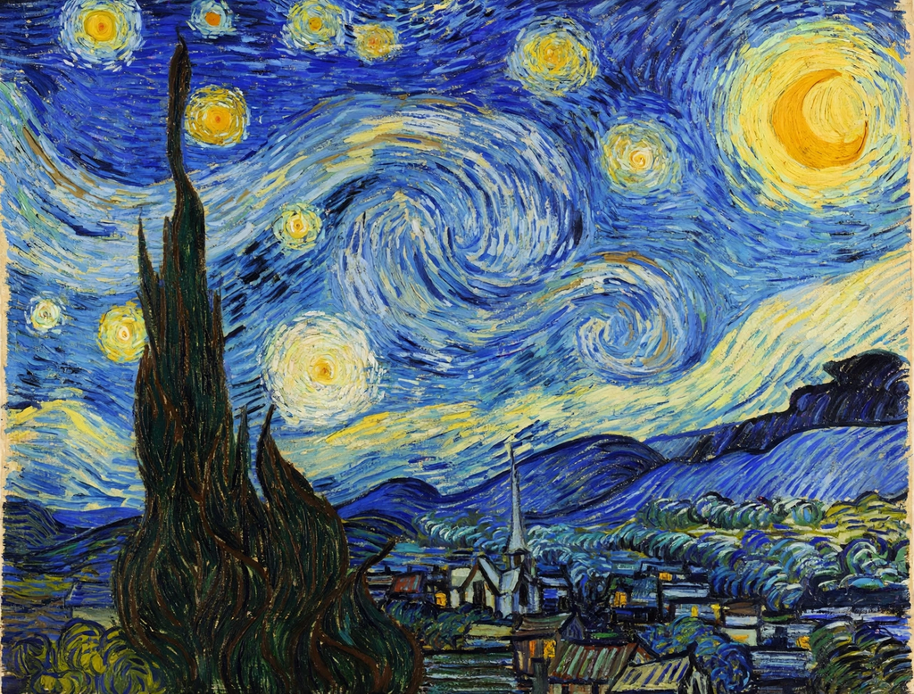

Post-Impressionism

The Starry Night (1889) by Vincent van Gogh, swirling night sky over a quiet Provençal villagePost-Impressionism is a predominantly French art movement that developed roughly between 1886 and 1905, from the last Impressionist exhibition to the birth of Fauvism. The term was coined by the English critic Roger Fry for his 1910 exhibition Manet and the Post-Impressionists in London. Post-Impressionists continued using vivid colours and visible brushwork but pushed beyond Impressionism's naturalism toward expression, structure and symbolic content.
Its central figures are Vincent van Gogh, Paul Cézanne, Paul Gauguin and Georges Seurat. Van Gogh's The Starry Night (1889) and Cézanne's repeated studies of Mont Sainte-Victoire are emblematic works.
Approaches
The Post-Impressionists were not a unified group. Seurat and Signac developed Pointillism (Divisionism), building images from distinct dots of pure colour; Cézanne analysed form into geometric solids ('treat nature by the cylinder, the sphere, the cone'); Gauguin pursued Synthetism and symbolic colour in Brittany and Tahiti; van Gogh made expressive, swirling brushwork a vehicle for emotion.
Legacy
Post-Impressionism laid the foundations of twentieth-century modern art: the Fauvists, Cubists, Expressionists and abstract painters all drew on its liberation of colour and form from descriptive duty.